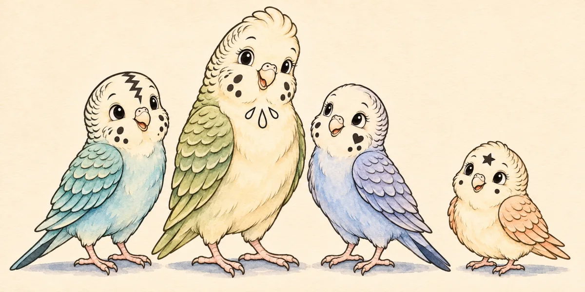

The Chirps and the Welcome Tree
Read together as four budgies prepare for Everybody Day. Each of the twenty stories ends with a question to talk about.
- The Tree With Paper Leaves
- The Arrow That Danced
- One Beat for Beetle
- The Gate at Snail Height
- A Roof That Sang in the Rain
- Who Rang the Empty Bell?
- The Story With a Hole in It
- The Seat the Size of a Sigh
- The Trail That Took a Nap
- The Great Acorn Almost-Race
- The Picnic at the Far End of the Cloth
- The Moon in the Mixing Bowl
- Daisy and the Dance That Went Sideways
- The Shadow With the Wrong Hat
- A Hello You Can Fold
- Bella’s Pocketful of Thunder
- The Parade That Came in Backward
- Chip and the Backwards Queue
- The Picture That Wouldn’t Stay
- The Day the Welcomes Flew
Another way to tell the fourth story · Snail Opens a Sky Museum